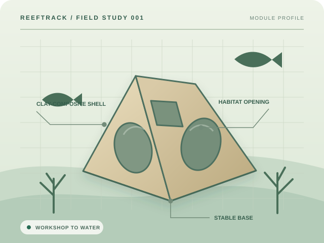

FRManagement and validation
Faculty / Researcher
Manage batches, evaluate mixtures, validate quality-control records, oversee users, and generate research reports.
Enter Faculty workspaceDOrSU Artificial Reef Production Facility
ReefTrack connects clay mixture evaluation, production batches, quality control, deployment coordinates, and field monitoring in one accountable system.

The production record
Each stage adds information to the same batch record, giving researchers, technicians, and reviewers a shared source of truth.
Check clay, cement, pozzolan, fiber, and curing targets against documented rules.
Register production dates, quantities, assigned technicians, and observations.
Record curing progress and Faculty quality-control decisions before deployment.
Store exact coordinates, site conditions, team details, and monitoring schedules.
Connect post-deployment observations and reef condition reports to the batch.
Review verified production, deployment, and monitoring summaries.
Role-based workspaces
Access is organized around the work each role performs. All roles contribute to or review the same connected lifecycle.
Manage batches, evaluate mixtures, validate quality-control records, oversee users, and generate research reports.
Enter Faculty workspaceEncode batches, update curing, scan QR labels, record deployments, and submit monitoring observations.
Enter Technician workspaceInspect validated records, deployment sites, monitoring history, compliance trails, and authorized reports.
Enter Official workspaceBuilt for accountable fieldwork
ReefTrack was designed for the Artificial Reef Production Facility of Davao Oriental State University. It keeps operational details traceable without hiding the rules behind automated predictions.
Create a ReefTrack account